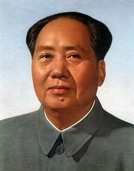

Mao Zedong involved a basic spot in the narrative of the nation's resurgence. Undoubtedly, he didn't assume a predominant part all through the entire battle. In the early long periods of the CCP, he was an auxiliary figure, however in no way, shape, or form an immaterial one, and even after the 1940s (aside from maybe during the Cultural Revolution) the pivotal choices were not his alone. In any case, taking a gander at the entire time frame from the establishment of the CCP in 1921 to Mao's demise in 1976, one can decently see Mao Zedong as the key designer of the new China.
